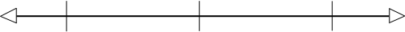

| |
 22 février 2008 -- Volume 12, No 1
22 février 2008 -- Volume 12, No 1
ISSN 1481-1340
L'affirmation de soi
Par Karène Larocque et Katia Doyon, psychologues
1) Une affirmation respectueuse de soi et de l’autre
Contenu :

Voici enfin cette première lettre de l'année 2008.
Nous nous excusons auprès de tous nos lecteurs pour l' interruption involontaire des envois de la lettre pendant quelques
mois. Ceux qui les ont reçus sans problème nous pardonneront sans doute ces répétitions.
Nous vous avons fait part dans un courrier séparé de nos difficultés les concernant. À ce jour,
tout est rentré dans l'ordre.
Nous profitons de cette "presque" fin d'hiver, pour vous inviter à penser aux projets qui vous tiennent à cœur...
Pourquoi ne pas les réaliser ? Profitez-en pour explorer de nouvelles avenues, ouvrir des portes,
vous arrêter quelquefois pour prendre le temps de faire le point, ne pas oublier de vous nourrir
pour repartir avec le plein d'énergie .
C'est également l'occasion de vous présenter nos projets et priorités pour l'année à venir : une réflexion profonde à propos du site de Ressources en développement,
un rafraîchissement des services proposés et ……… enfin !, la concrétisation d'un projet conçu, développé
et porté par Jean Garneau et Michelle Larivey, attendu par un grand nombre d'entre vous, le programme
d'auto-développement "L'Expression Efficace"
Nous continuerons également à vous proposer les conférences-ateliers pour lesquelles tant de participants ont manifesté leur enthousiasme et leur satisfaction.
Les deux premières de cette session de printemps,
 Vaincre la dépendance affective et
L’affirmation de soi,
Vaincre la dépendance affective et
L’affirmation de soi,
auront lieu les 25 et 26 mars, à Montréal, au Québec.
À partir du 27 mars , nous organisons des journées de formation professionnelle :
Ces formations s’adressent aux intervenants de la relation d’aide et professionnels de la santé psychologique.
Pour connaître les dates de nos prochaines activités consultez le calendrier publié sur notre site.
Martine Mignot
|
L'affirmation de soi
Première partie :
Une affirmation respectueuse de soi et de l’autre
Par Karène Larocque, psychologue spécialisée en auto-développement
et Katia Doyon, psychologue.
Cet article est le premier d’une série sur l’affirmation de soi. Nous vous y présentons notre conception de l’affirmation de soi et ses conséquences dans les relations, ainsi que notre point de vue concernant ce qui, en elle, est sain et malsain. Vous y découvrirez deux types d’affirmation malsaine : L’affirmation passive et l’affirmation dévalorisante.
Dans les articles suivants, nous aborderons les caractéristiques d’une saine affirmation, le choix de s’affirmer ou non, ainsi que l’entraînement à l’affirmation de soi.
A. Qu’est-ce que l’affirmation de soi ?
B. L’affirmation de soi « saine » et « malsaine »
1. Qu’est-ce qui est sain ? Qu’est-ce qui est malsain ?
2. L’affirmation saine : une affirmation de soi respectueuse
3. L’affirmation passive : un manque de respect pour soi
4. L’affirmation dévalorisante : un manque de respect pour l’autre
Exercice pour poursuivre votre réflexion d’ici la suite de cet article
.............
A. Qu’est-ce que l’affirmation de soi ?
L’affirmation de soi est la capacité d’être expressif de soi : de ses opinions, de ses valeurs, de ses émotions, de ses besoins et de ses limites. On peut s’affirmer en s’exprimant verbalement mais aussi en agissant.
Lorsque je pose un geste pour respecter mes limites, je m’affirme.
Lorsque je contribue au recyclage pour respecter mes convictions profondes, je m’affirme.
Lorsque je donne mon point de vue lors d’une discussion avec mes collègues, je m’affirme.
Lorsque je dis non à une proposition pour faire ce dont j’ai envie, je m’affirme.
Lorsque je me sens seule et que j’invite des ami(e)s pour le souper, je m’affirme.
Tous les gestes que je pose pour respecter ce que je suis sont des gestes d’affirmation de soi. L’expression de soi peut donc se faire tant en paroles qu’en gestes.
B. L’affirmation de soi « saine » et « malsaine »
1. Qu’est-ce qui est sain ? Qu’est-ce qui est malsain ?
Le choix qui se pose ici entre ce qui est sain ou malsain n’est pas purement subjectif. Il repose sur des faits observables par chacun de nous. En fait, les critères qui nous font classer un comportement sain ou non dépend de son résultat. Si la santé et l’épanouissement en résultent, nous le considérons sain. Si la maladie et la détérioration en résultent, nous le considérons malsain.
Lorsque je m’affirme sainement, je me retrouve en meilleure santé psychologique et je me développe. Il en est de même pour mes relations. Elles sont en meilleure santé et elles s’épanouissent !
Lorsque je ne m’affirme pas ou que je m’affirme de façon irrespectueuse, je me retrouve en piètre santé psychologique. De plus, mes relations se détériorent.
2. L’affirmation saine : une affirmation de soi respectueuse !
Nous remarquons que les gens qui s’affirment de façon à pouvoir se respecter eux même tout en respectant l’autre sont en meilleure santé psychologique et ont des relations plus saines et davantage satisfaisantes que ceux qui ne s’affirment pas, ou encore, qui le font au détriment de l’autre. Une affirmation saine est donc une expression, en parole ou en geste, qui me respecte tout en respectant l’autre.
« La liberté des uns se termine où la liberté des autres commence ! »
| Passive |
Affirmation saine |
Dévalorisante |

| Ne se respecte pas pour respecter l’autre |
Respectueux de soi et de l’autre |
Se respecte en dévalorisant l’autre |
Les deux pôles sont nécessaires : Le respect de soi et de l’autre. La négligence d’un ou de l’autre entraîne des symptômes et une détérioration.
3. L’affirmation passive : un manque de respect pour soi !
Lorsque les gens parlent d’un manque d’affirmation, c’est habituellement de ce pôle qu’il s’agit. L’affirmation passive consiste à respecter l’autre, au détriment de soi et de ses besoins.
Dans son milieu de travail, Paul souhaite par-dessus tout être apprécié par ses patrons et collègues de travail et est très soucieux de ne pas leur déplaire. Ainsi, il oublie de prendre ses pauses et fait du temps supplémentaire, même les soirs où il avait prévu d’autres activités à l’extérieur. Souvent, il arrive au travail en se disant qu’il refusera de faire telle tâche si on lui demande, mais il finit toujours par dire « oui » au moment de la demande. Paul est ensuite déçu et fâché contre lui de ne pas s’être respecté.
Dans cet exemple, Paul choisit de s’effacer devant les autres en ne faisant aucune place à ses besoins et va même jusqu’à se renier en faisant l’inverse de ce qu’il veut réellement.
Une autre forme d’affirmation passive consiste à se cacher, c’est-à-dire à exister derrière les autres. On peut se cacher derrière une autre personne, un groupe, un professionnel et même derrière un article de magazine électronique !
« Mon psychologue dit que c’est très important qu’on discute tous les deux de notre conflit. »
« Nous, les femmes, accordons de l’importance aux émotions. »
« Ils le disent dans la Lettre du Psy : c’est important de s’affirmer sainement ! »
C’est déjà plus sain que de s’effacer et de se renier. Nous pouvons classer du plus malsain au plus sain, les formes d’affirmation passive :
- Se renier : Dire ou faire l’inverse de ce que je veux.
Se renier est l’équivalent de se maltraiter.
- S’effacer : Ne rien dire ou ne rien faire.
S’effacer est l’équivalent d’être indifférent envers soi.
- Se cacher : Dire ou faire mais en n’assumant pas ce qu’on dit ou fait.
Se cacher est l’équivalent de dire ou de faire ce que je veux mais sans le montrer ouvertement.
On pourrait aussi ajouter une autre forme d’affirmation un peu plus saine mais pas encore tout à fait autonome :
d. S’appuyer : Dire ou faire ce que je veux en m’appuyant sur un élément extérieur pour me justifier.
« Je considère important qu’on discute tous les deux de notre conflit. Mon psychologue est d’accord avec moi. »
« J’accorde beaucoup d’importance aux émotions ; comme beaucoup de femmes d’ailleurs ! »
« Je trouve cela important de m’affirmer sainement. Ils le disent aussi dans la Lettre du Psy ! »
Évidemment, plus je suis passif dans mon affirmation, plus la détérioration de ma santé psychologique sera importante. De ce côté du pôle, la maladie s’installe de façon plus évidente chez l’individu que dans la relation. Cette dernière ne va pas mieux pour autant mais de l’extérieur, les ravages sont plus évidents chez l’individu. Sa vitalité et son estime de soi s’éteindra de plus en plus. Puisque la vitalité et la santé d’une relation dépend de la vitalité et de la santé de chacun de ses membres, la relation en paiera le prix, tôt ou tard.
Pour ce qui est de la relation dans laquelle l’un des partenaires ne s’affirme pas, elle s’éteint souvent sans bruit. En effet, nous entendons souvent dans nos cabinets : « Notre relation est éteinte. Je ne comprends pas ce qui se passe, on ne se chicane jamais! » Il est important de savoir qu’il est tout-à-fait normal et sain d’avoir des désaccords dans une relation. À ce sujet, vous pouvez lire l’article de Michelle Larivey, Querelles et chicanes dans le couple. Puisque dans une relation nous sommes toujours deux personnes différentes avec chacun nos besoins et nos limites, les désaccords sont inévitables. Une relation où les désaccords sont absents est souvent le signe qu’un des deux partenaires se renie pour le bénéfice de l’autre.
4. L’affirmation dévalorisante : un manque de respect pour l’autre !
Lorsque les gens parlent de « trop s’affirmer » ou encore de « mal s’affirmer », c’est habituellement de ce pôle qu’il s’agit. On pourrait dire : « Trop, c’est comme pas assez ! » En effet, l’affirmation doit respecter une limite pour demeurer saine, elle doit respecter l’autre. Il ne s’agit pas ici de se soumettre à l’autre ou encore d’être d’accord. Je peux très bien respecter votre point de vue tout en étant en désaccord avec vous. Il s’agirait dans un tel cas d’affirmer mon point de vue différent sans dévaloriser le vôtre.
Dans ce type d’affirmation, la dévalorisation peut concerner un point particulier : comportement, réaction émotive, besoin, limite ou opinion de l’autre. Elle peut aussi concerner la personne dans son ensemble. Toute forme d’expression qui porte une évaluation négative de la valeur de l’autre, de l’ensemble ou d’une partie de sa personne, est dévalorisante.
Ce qui est valable aux yeux d’une personne dépend de ses propres valeurs. Puisque celles-ci varient d’un individu à l’autre, ce à quoi nous accordons de la valeur est différent pour chacun. On peut ne pas valoriser certains points de vue, comportements, réactions émotives, besoins, limites ou personnes, mais ils ne sont pas pour autant non valables. Il y a une différence entre affirmer que vous n’accordez pas de valeur aux émotions et affirmer que les émotions ne sont pas valables ou que les gens émotifs ne sont pas valables. Pour affirmer votre position de façon respectueuse, il est nécessaire d’admettre la réalité qu’une position différente de la vôtre puisse être valable pour une autre personne.
Généralement, nous arrivons facilement à considérer comme malsaines les situations d’attaques psychologiques (« Tu n’es qu’un idiot ! » « Tu ne vaux rien ! ») ou physiques (De la bousculade au coup). Toutefois, la dévalorisation peut prendre différentes formes courantes. Tellement courantes, qu’elles exigent une explication pour en saisir le caractère irrespectueux !
« Tu n’as pas à te fâcher pour une raison pareille ! »
Je juge que la raison pour laquelle l’autre est fâché n’est pas valable. Pourtant, nous avons tous le droit de sentir ce que nous ressentons. En fait, ce n’est même pas une question de droit. Droit ou non, je ressens ce que je ressens ! Si je respectais l'autre, dans la même situation je pourrais dire : « Je vois bien que tu es fâché, mais je t’avoue que j’ai du mal à comprendre ta réaction. »
« Tu accordes trop d’importance au travail ! »
Cette fois, je porte un jugement sur ce que l’autre devrait considérer important. Pourtant, il n’y a rien d’important en soi. Ce que je considère important dépend de mes valeurs et, comme nous l’avons vu précédemment, celles-ci sont propres à chacun. Une affirmation respectueuse dans cette même situation pourrait prendre la forme suivante : « Je suis déçu que tu travailles autant. J’aimerais passer plus de temps avec toi. »
« Ce que tu dis n’a pas de sens ! »
Ici, j’évalue que ce que l’autre me dit n’est pas valable. Une réponse respectueuse pourrait être : « Mon opinion est tellement différente de la tienne que j’ai de la difficulté à comprendre ta position ! »
« Tu as trop besoin d’affection ! »
Ici, je juge l’importance du besoin de l’autre. Tout comme les réactions émotives, les besoins sont propres à chacun. Il en est de même pour les limites d’ailleurs. Une façon respectueuse de réagir dans une telle situation pourrait être : « Je ne suis pas disponible (ou je ne suis pas d’accord) pour être plus affectueux avec toi ».
Vous pouvez remarquer que les expressions dévalorisantes que nous venons de décrire parlent toutes de l’autre. Les expressions respectueuses parlent de soi. Il est donc utile d’identifier si je parle de moi ou de l’autre. C’est une façon assez simple de reconnaître si je m’affirme de façon respectueuse ou non.
Ces affirmations dévalorisantes portent sur la valeur des réactions émotives, valeurs, opinions, et besoins de l’autre. Parfois, elles portent sur la valeur de la personne. Ces jugements sont habituellement plus malsains ; c'est-à-dire plus dommageables pour la relation et chacun de ses partenaires.
Évidemment, plus on est dévalorisant dans son affirmation plus la détérioration de la relation sera importante. De ce côté du pôle, la maladie s’installe de façon plus évidente dans la relation que chez l’individu. Si l’autre membre de la relation ne se défend pas ou ne réagit pas à ces dévalorisations, il se détériorera également ; sa vitalité et son estime seront atteintes. Plus une personne s’affirme de cette façon, plus les ravages seront importants et ce sont la majorité de ses relations qui se détériorera. Lorsqu’on agit régulièrement de façon dévalorisante envers les autres, on se retrouve habituellement sans relation nourrissante et évidemment sans nourriture affective. L’individu qui s’affirme de cette façon en souffrira certainement tôt ou tard.
Comment poursuivre votre réflexion d’ici le prochain article de cette série ?
Nous vous invitons à demeurer attentif à votre façon de vous affirmer :
Avez-vous tendance à être passif dans votre affirmation ?
Si oui, en êtes-vous à vous renier, vous effacer, vous cacher ou vous appuyer ?
Quel résultat obtenez-vous habituellement en vous affirmant de cette façon ?
Dans quel(s) contexte(s) êtes-vous porté à être passif ? Est-ce une circonstance particulière ou devant un type de personne particulier ?
En quoi cela vous parle-t-il de vous, de votre histoire, de vos blessures ?
Avez-vous tendance à vous affirmer de façon dévalorisante ?
Si oui, avez-vous tendance à dévaloriser les comportements, réactions émotives, besoins, limites ou points de vue de l’autre ?
Y a-t-il des éléments particuliers que vous avez tendance à dévaloriser davantage ?
Quel résultat obtenez-vous habituellement en vous affirmant de cette façon ?
Dans quel(s) contexte(s) êtes-vous porté à dévaloriser l’autre ? Est-ce une circonstance particulière ou devant un type de personne particulier ?
En quoi cela vous parle-t-il de vous, de votre histoire, de vos blessures ?
Nous vous invitons à prendre des notes sur vos observations.
Vous pouvez partager avec nous vos réflexions, elles nous alimenteront pour la suite de cet article.
Vous savez déjà qu’il est important d’être respectueux de soi et de l’autre. L’article suivant traitera d’autres caractéristiques qui rendent une affirmation saine. Une affirmation qui permet de se développer, de gagner en estime de soi et de développer des relations plus saines et satisfaisantes.
Questions-réponses
Vous avez des questions à nous poser à propos de cet article ?
N'hésitez pas à les envoyer à commentaires1d@redpsy.com
Les réponses seront des informations applicables de façon générale et non des conseils individuels.
Pour plus de détails, voir http:/www.redpsy.com/engarde.html sur notre site
Présentation des auteurs
Karène Larocque,
psychologue spécialisée en Auto-développement
Présentation de Karène Larocque
Katia Doyon,
psychologue humaniste
Katia est psychologue humaniste depuis 2002 et son intervention s’inspire principalement de l’approche de l’Auto-Développement.
Elle œuvre en pratique privée ainsi qu’auprès d’une clientèle étudiante en milieu universitaire. Elle pratique la psychothérapie individuelle et offre des ateliers de groupe sur différents thèmes de développement personnel (estime de soi, affirmation de soi, émotions).
Elle intervient avec une clientèle aux difficultés variées : estime de soi, confiance en soi, affirmation de soi, dépression, anxiété, trouble alimentaire, difficultés relationnelles, abus. Elle a à cœur d’accompagner ses clients vers un plus grand respect d’eux-mêmes ainsi que dans l’atteinte d’une vie plus riche et satisfaisante.
kdoyon@redpsy.com
Pour aller plus loin sur la question
Vous pouvez lire :
Dans la section Infopsy
- L’expression qui épanouit
Pour réussir une expression constructive et non destructrice.
- Transfert et conquête de l’autonomie
Pour ceux qui réagissent à la réalité que les autres ne nous acceptent pas nécessairement tels que nous sommes et ne nous approuvent pas toujours.
- Colère et violence
Pour différencier la colère canalisée, l’explosion de la colère et la violence.
- Querelles et chicanes dans le couple
Pour distinguer les querelles malsaines de celles qui sont saines et nécessaires.
Dans le guide des émotions
- La colère
- La rage
- La révolte
- Le mépris
- La violence
Dans la section Images intérieures (poésie)
- Les hauts et les bas du loup
Poème inspiré par les tentatives progressives de celui qui choisit de se respecter plutôt que de se laisser manger la laine sur le dos.
- Sursauts de l’agneau
Poème inspiré par les résistances et reculs inévitables de celui qui apprend à se respecter.
Vous pouvez participer...
Conférence-atelier : L'affirmation de soi... ça se développe
Mercredi 26 mars 2008, au Centre St-Pierre de Montréal (Qc, Canada)
Vous en voulez plus ?
Utilisez notre outil de recherche !
La conférence-atelier
En attendant un enfant, nourrir votre couple
par France Potvin, psychologue
spécialisée en périnatalité
vous sera proposée le mercredi 4 juin 2008.
Nous en reparlerons dans la prochaine lettre du psy.
Pour tous renseignements concernant le contenu détaillé, les tarifs et l'inscription,
consultez la page
conférences-ateliers sur le site de redpsy.com
Les conférences-ateliers données par Karène Larocque
auront lieu au printemps de l'année 2008, à partir du 25 mars.
Vous trouverez toutes les dates sur notre calendrier
Consultez-le régulièrement pour vous
tenir au courant de nos activités.
Vous aimeriez nous aider à diffuser l'information parmi vos collègues, au bureau, au sein de votre association ou dans tout autre lieu que vous fréquentez ?
Procurez-vous une affichette en nous écrivant à conference@redpsy.com pour en faire la demande, nous vous l'enverrons par courriel. Merci d'avance.
|
Pause commerciale
 L'enfer de la fuite L'enfer de la fuite
Comment en revenir plus fort
Par Jean Garneau et Michelle Larivey
avec les collaborations de
Gaëtane La PLante, Karène Larocque et Bruno Roberge
Êtes-vous engagé dans la descente aux enfers que provoque la fuite de soi-même ? Émotions excessives, indifférence émotionnelle, angoisse, phobies, stress, dépression, maladies psychosomatiques sont parmi les désordres qui nous attendent dans ce dérapage inquiétant.
Deuxième ouvrage de la Collection La lettre du Psy, L'enfer de la fuite vous invite à évaluer où vous en êtes sur cette pente dangereuse, mais surtout à découvrir les moyens d'en ressortir grandi, en possession de ressources que vous ne pensiez pas pouvoir découvrir en vous.
Pour plus d’information, voyez http://redpsy.com/editions/enfer.html
|
|
Les détails techniques
Comment...
Auteur? Consultez Nos
politiques éditoriales
 |
|
Menu
|